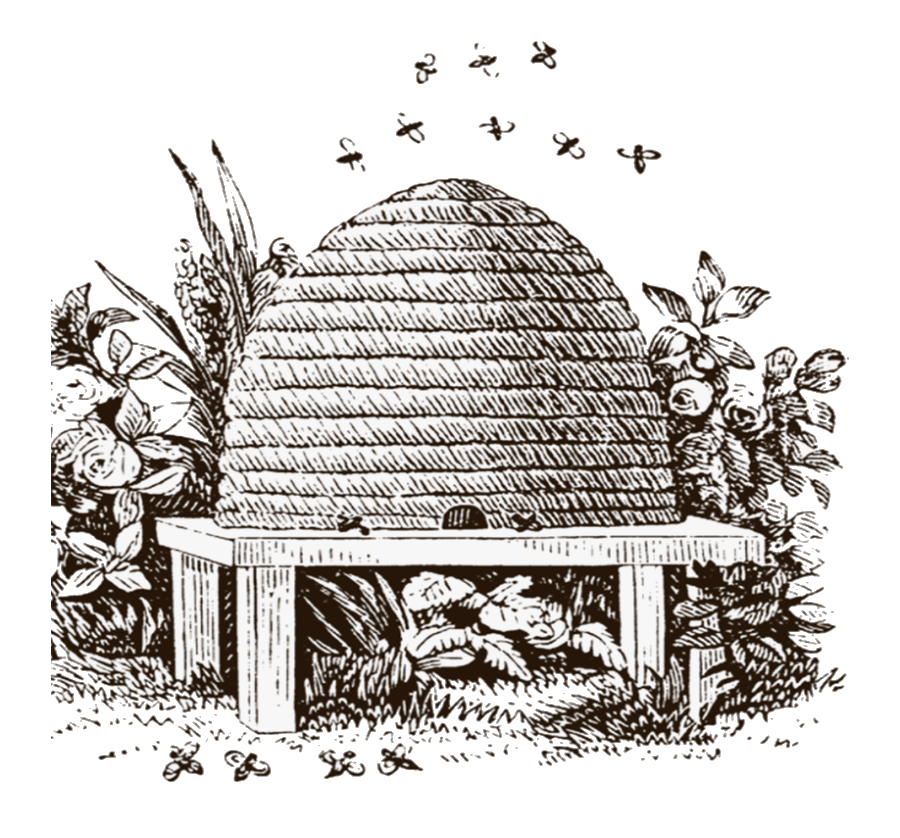

Un stup este o structură închisă în care trăiesc și își cresc puii unele specii de albine din subgenul Apis. Deși cuvântul stup este folosit în mod obișnuit pentru a descrie cuibul oricărei colonii de albine, literatura științifică și profesională distinge cuibul de stup. Cuibul este folosit pentru a discuta coloniile care se adăpostesc în cavități naturale sau artificiale sau sunt agățate și expuse. Stupul este folosit pentru a descrie o structură artificială / artificială pentru a adăposti un cuib de albine. Mai multe specii de Apis trăiesc în colonii, dar pentru producerea mierii albina vestică (Apis mellifera) și albina estică (Apis cerana) sunt principalele specii păstrate în stupi.